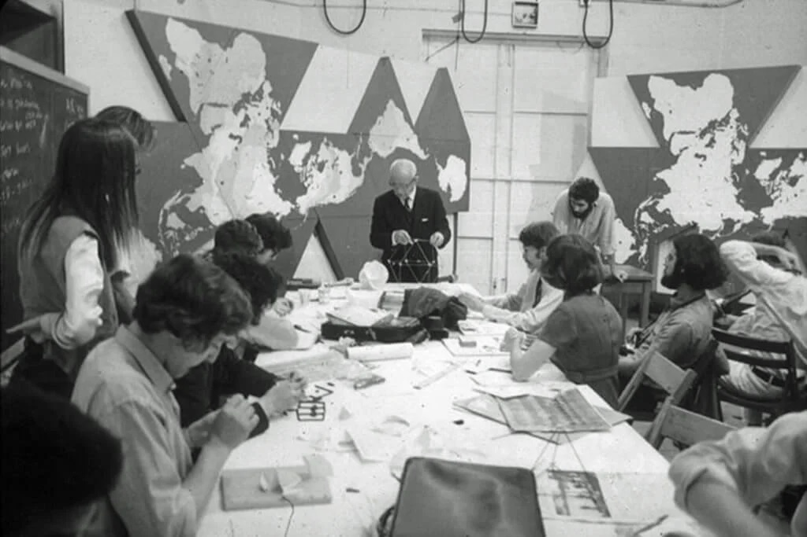

1
2
3
4
Play
"no one loses

united we stand"
Level 1
HELLLOOOOO
(Objective)
The World Game is a scientific means for
exploring expeditious ways of employing
the World’s resources so efficiently and
omni-considerately as to be able to
provide a higher standard of living for all of
humanity-higher than has heretofore been
experienced by any humans-and on a con-
tinually sustainable basis for all generations
to come, while enabling all of humanity
to enjoy the whole planet Earth without
any individual profiting at the expense of
another and without interference with one
another, while also rediverting the valuable
chemistries known as pollution to effective
uses elsewhere, conserving the wild
resources and antiquities.
(Rules)
The World Game, the comprehensive
planning tool, will make visible through large
scale computer simulation and display the
reactions and resultants of these compre-
hensive, anticipatory, design science
explorations. In the terms of other more
familiar games, this is the “game board”
of the World Game upon which “moves”
are made. “Winning” in the World Game is
making the world work, making mankind a
success, in the most efficient and expedi-
tious ways possible.
In such a way they are not competing
teams or individual winners. You will use
the computer resources, data and maps
provided to solve scenarios that address
relevant global issues. The World Game
refers to a strategy or a combination of
strategies, with their documentation, as a
“scenario.” The scenario encompasses a
logical sequence of events (the strategy)
which shows how, starting from the
present, a future evolutionary condition
might evolve step by step.
The general criteria for one strategy’s
“merit” over another strategy’s merit is
based on:
(a) whether it be a “success”?
(b) whether it can do the same quicker
(c) whether it can quicker utilizing ‘Earth’s
income (non-depletabl) resources of
energy and materials
(d) whether it can do all above ‘plus
metaphysically’ enhancing mankind.
Level 2
(Who)
Bucky was fond of making
up phrases when he felt that
ordinary words did not express
what he meant to say. He
coined the phrase “Spaceship
Earth” to describe our planet.
He felt that all human beings
were passengers on Spaceship
Earth, and, like the crew of a
buckminster fuller rgwkuhgfiewhjfoiwnj wfhewuhflewjbfewlfcubahljfglieuhgfldn
kfjvljabrilghea ihdnfvlkadjb eahfakjnfkln